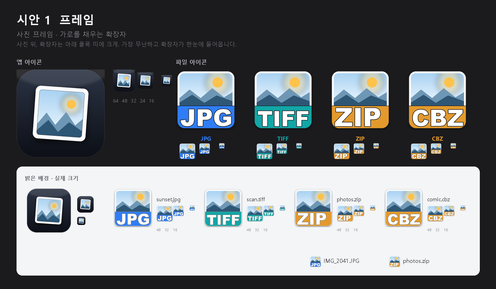
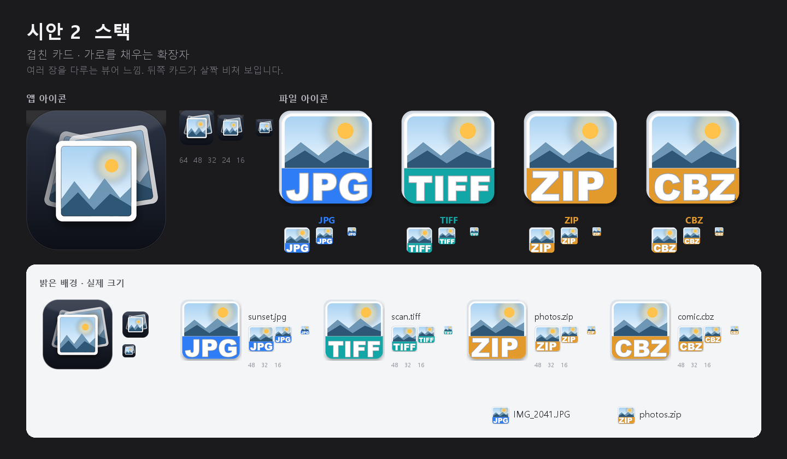
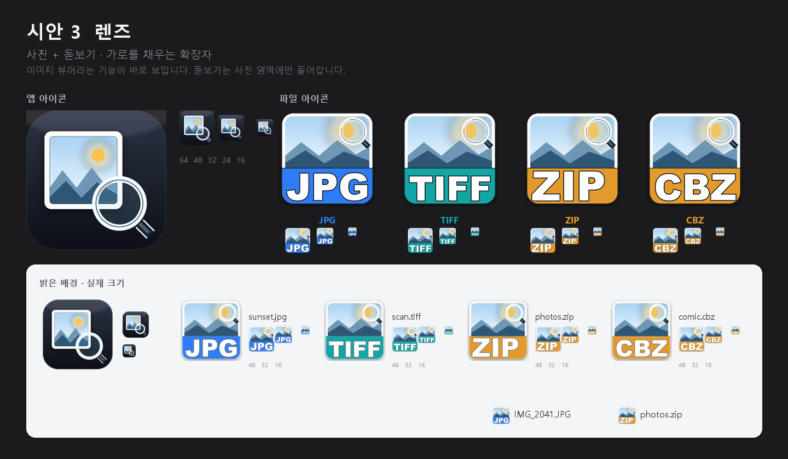
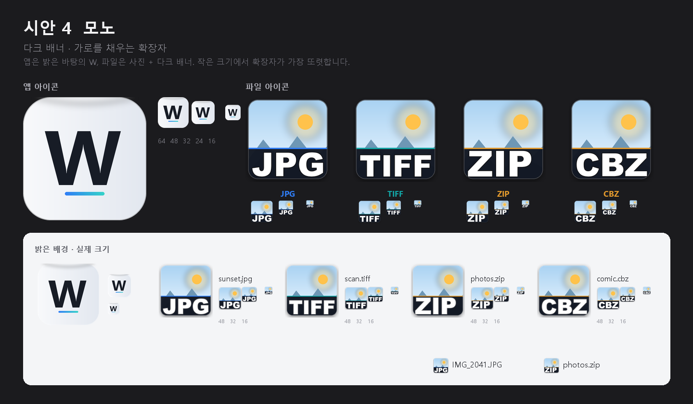

시안 1 · 프레임 추천
사진 프레임 + 가로를 채우는 확장자
가장 무난하고 정직한 모양. 흰 프레임 덕분에 밝은 탐색기와 어두운 배경 모두에서 사진으로 즉시 읽히고, 확장자는 아래 띠에 꽉 차게 들어갑니다.
단점 · 흔한 편
앱 아이콘과 파일 연결 아이콘 4가지 방향입니다. 확장자 글자는 사진 아래 풀폭 띠에 크게 들어갑니다.
사진을 클릭하면 원본 크기로 열립니다. 시트 안에 256 / 64 / 48 / 32 / 16px 실제 크기를 함께 배치했습니다.

사진 프레임 + 가로를 채우는 확장자
가장 무난하고 정직한 모양. 흰 프레임 덕분에 밝은 탐색기와 어두운 배경 모두에서 사진으로 즉시 읽히고, 확장자는 아래 띠에 꽉 차게 들어갑니다.
단점 · 흔한 편

겹친 카드 + 가로를 채우는 확장자
여러 장을 넘겨 보는 뷰어 느낌이 가장 강합니다. 뒤쪽 카드가 살짝 비쳐 보여 파일이 여러 개 겹친 듯한 인상을 줍니다.
단점 · 16px에서 겹친 카드가 다소 뭉개짐

사진 + 돋보기 + 가로를 채우는 확장자
이미지 뷰어라는 기능이 한눈에 보입니다. 돋보기는 사진 영역에만 있어 확장자 띠를 가리지 않습니다.
단점 · 작은 크기에서 요소가 많음

W 모노그램 + 다크 확장자 배너
앱은 밝은 바탕의 W로 어느 배경에서나 또렷하고, 파일 아이콘은 사진 + 다크 배너로 확장자 대비가 가장 강합니다.
단점 · 사진 앱 느낌은 상대적으로 약함